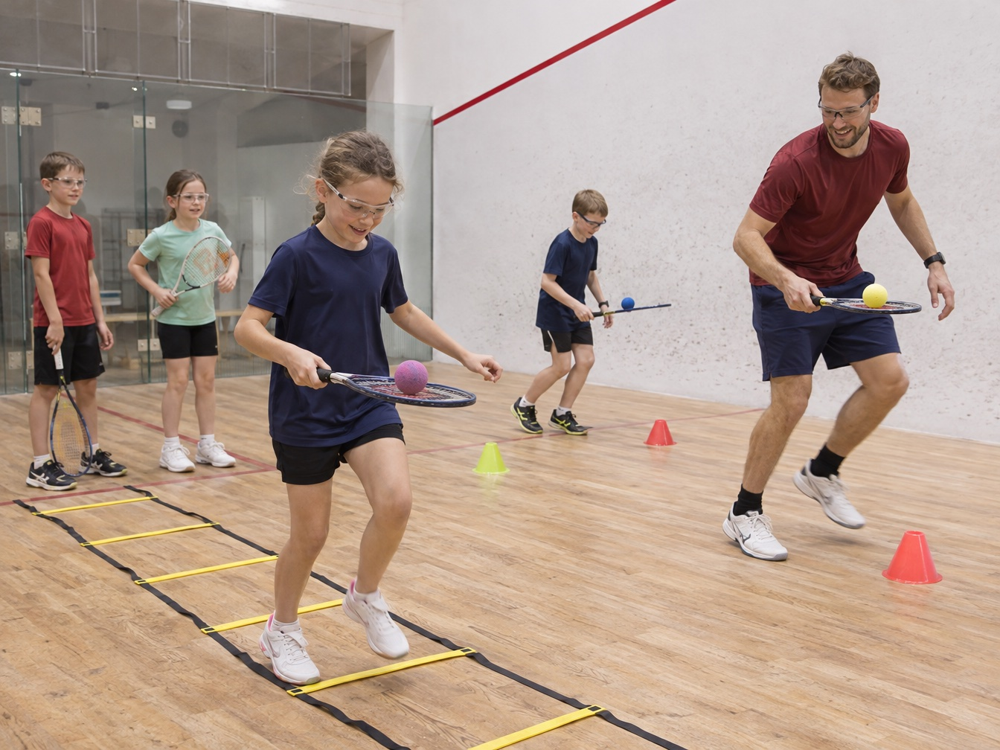

Každý úder je nové rozhodnutí
Kam míček poletí? Kde ho stihnete? Ve squashi se střídáte v úderech na přední stěnu a hledáte způsob, jak soupeře překvapit. Kromě pohybu je v každé výměně i prostor pro nápad.
Míček se odrazí od stěny a vy už přemýšlíte, kam pošlete další úder. Někdy rozhodne rychlý krok, jindy nápad. A když se povede společná výměna, chcete si ji dát znovu.
Objevte squash s dětmi, s kamarádem nebo na lekci pro začátečníky. První krok? Najít klub a domluvit si první návštěvu.

Kam míček poletí? Kde ho stihnete? Ve squashi se střídáte v úderech na přední stěnu a hledáte způsob, jak soupeře překvapit. Kromě pohybu je v každé výměně i prostor pro nápad.
Nemusíte hned počítat body. Zkuste s parťákem udržet míček ve hře o jeden úder déle. I krátká výměna vám dá společný cíl pro další pokus.
Správně zvolený míček dokáže první hru změnit. Odrazivější varianta vám dává víc času na pohyb i úder. S výběrem pro vás nebo vaše dítě se poraďte s trenérem.

Pohybová hra, hledání rovnováhy, první úkoly s míčkem. Děti se mohou se squashem seznamovat postupně: přes pohyb a jednoduché pokusy až k raketě a prvním výměnám. Záleží na jejich věku, zkušenostech a programu klubu.
Na tréninku tak může být chvíli důležité trefit míček a jindy zvládnout pohybový úkol společně s ostatními. Děti zkoušejí nové věci, učí se střídat a poznávají, co se jim daří. Další výzva nemusí být větší skóre — může to být další povedený úder.
Při výběru se ptejte, jak klub zapojuje úplné začátečníky a podle čeho sestavuje skupiny. Popište trenérovi také to, co vaše dítě baví a jestli už nějaký sport zkoušelo. Pomůže vám hledat vhodný začátek.
Jednotná hranice není. Některé kluby mají i předškolní školičky, jiné přijímají starší děti. O vhodné skupině se poraďte podle věku a zkušeností dítěte přímo v klubu.
Hledejte školičku nebo skupinu pro úplné začátečníky. Dětská výuka může začínat pohybem a jednoduchými úkoly, na které postupně navazuje práce s raketou.
Kluby nabízejí také rekreační trénování. Při domluvě řekněte, jestli hledáte pravidelný kroužek, nebo vás zajímá i závodění. Zeptejte se, jaké možnosti má vybraný klub.
Cenu určuje konkrétní klub a typ lekce. Zjistěte, co zahrnuje, zda se zvlášť platí kurt nebo vybavení a jak funguje pokračování po první návštěvě.
Nejčastěji hrají dva soupeři. Existuje také čtyřhra. Hraje se raketou a malým gumovým míčkem na kurtu se čtyřmi stěnami.
Za vyhranou výměnu získáte bod. Set se hraje do 11 bodů, od stavu 10:10 je potřeba náskok dvou bodů. Zápas se hraje na tři vítězné sety.
Oficiální pravidla jsou dostupná v dokumentech ČASQ.
V kalendáři akcí vyberte kategorii a datum. Detail konkrétního turnaje uvádí propozice a termín přihlášek.
Hráčům přístupové údaje zajišťuje jejich klub. Po přihlášení lze podávat přihlášky na turnaje a žádosti o přestupy či hostování.
Přístupové údaje pro klub vydává ČASQ. Obrátit se můžete na sekretariát.
V kontaktech najdete členy výkonného výboru podle jejich působnosti i oba pracovníky sekretariátu.
Chcete si zahrát po práci, přijít s kamarádem nebo se nejdřív naučit základy s trenérem? I pro dospělé jsou v klubové nabídce lekce pro začátečníky. Ptejte se na individuální výuku nebo vhodnou skupinu a domluvte si začátek podle svých zkušeností.
Nemáte spoluhráče? Řekněte to při prvním kontaktu. Zjistíte, jestli vám klub může nabídnout skupinový trénink nebo pomoci najít parťáka.